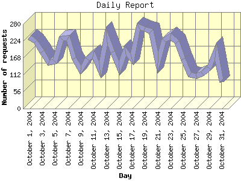

Report generated by Analog 5.91beta1 and Report Magic 2.21
|
Web Server Statistics for "Harish Narayanan (hnarayan) - October 2004" Report generated by Analog 5.91beta1 and Report Magic 2.21 |
The Daily Report identifies the activity for each day within the reporting period. Remember that one page hit can result in several server requests as the images for each page are loaded.

| Day | Number of requests | Number of bytes transferred | Percentage of the bytes | Percentage of the requests | |
|---|---|---|---|---|---|
| 1. | October 1, 2004 | 235 | 6.198 MB | 3.98% | 4.17% |
| 2. | October 2, 2004 | 222 | 5.859 MB | 3.76% | 3.94% |
| 3. | October 3, 2004 | 187 | 6.468 MB | 4.15% | 3.31% |
| 4. | October 4, 2004 | 152 | 4.458 MB | 2.86% | 2.69% |
| 5. | October 5, 2004 | 157 | 3.734 MB | 2.40% | 2.78% |
| 6. | October 6, 2004 | 233 | 8.607 MB | 5.52% | 4.13% |
| 7. | October 7, 2004 | 234 | 5.144 MB | 3.30% | 4.15% |
| 8. | October 8, 2004 | 166 | 4.852 MB | 3.11% | 2.94% |
| 9. | October 9, 2004 | 129 | 4.475 MB | 2.87% | 2.29% |
| 10. | October 10, 2004 | 165 | 4.838 MB | 3.10% | 2.92% |
| 11. | October 11, 2004 | 180 | 6.001 MB | 3.85% | 3.19% |
| 12. | October 12, 2004 | 128 | 4.160 MB | 2.67% | 2.27% |
| 13. | October 13, 2004 | 239 | 4.237 MB | 2.72% | 4.24% |
| 14. | October 14, 2004 | 188 | 6.564 MB | 4.21% | 3.33% |
| 15. | October 15, 2004 | 134 | 6.272 MB | 4.03% | 2.38% |
| 16. | October 16, 2004 | 191 | 7.663 MB | 4.92% | 3.39% |
| 17. | October 17, 2004 | 165 | 9.387 MB | 6.02% | 2.92% |
| 18. | October 18, 2004 | 271 | 5.723 MB | 3.67% | 4.80% |
| 19. | October 19, 2004 | 263 | 6.226 MB | 4.00% | 4.66% |
| 20. | October 20, 2004 | 256 | 4.330 MB | 2.78% | 4.54% |
| 21. | October 21, 2004 | 153 | 4.917 MB | 3.15% | 2.71% |
| 22. | October 22, 2004 | 226 | 6.877 MB | 4.41% | 4.01% |
| 23. | October 23, 2004 | 239 | 5.264 MB | 3.38% | 4.24% |
| 24. | October 24, 2004 | 219 | 6.714 MB | 4.31% | 3.88% |
| 25. | October 25, 2004 | 163 | 2.580 MB | 1.66% | 2.89% |
| 26. | October 26, 2004 | 111 | 1.167 MB | 0.75% | 1.97% |
| 27. | October 27, 2004 | 109 | 2.364 MB | 1.52% | 1.93% |
| 28. | October 28, 2004 | 115 | 1.802 MB | 1.16% | 2.04% |
| 29. | October 29, 2004 | 134 | 2.682 MB | 1.72% | 2.38% |
| 30. | October 30, 2004 | 190 | 4.765 MB | 3.06% | 3.37% |
| 31. | October 31, 2004 | 87 | 1.512 MB | 0.97% | 1.54% |
Most active day October 23, 2004 : 117 pages sent. 271 requests handled. 6,000,661.00 served.
Daily average: 181 requests handled. 5.027 MB served.
This report was generated on November 16, 2004 14:01.
Report time frame October 1, 2004 00:09 to October 31, 2004 22:18.
| Web statistics report produced by: | |
 Analog 5.91beta1 Analog 5.91beta1 |  Report Magic 2.21 Report Magic 2.21 |